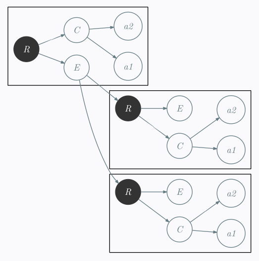

Trees; Pragmatism and Formalism
tl;dr: :
- I tried to program a simple filter
- Was blocked 2 days
- Then stopped working like an engineer monkey
- Used a pen and a sheet of paper
- Made some math.
- Crushed the problem in 10 minutes
- Conclusion: The pragmatism shouldn’t mean “never use theory”.
Abstract (longer than tl;dr: )
For my job, I needed to resolve a problem. It first seems not too hard. Then I started working directly on my program. I entered in the infernal: try & repair loop. Each step was like:
– Just this thing to repair and that should be done.
– OK, now that should just work.
– Yeah!!!
– Oops! I forgotten that…
repeat until death
After two days of this Sisyphus work, I finally just stopped to rethink the problem. I took a pen, a sheet of paper. I simplified the problem, reminded what I learned during my Ph.D. about trees. Finally, the problem was crushed in less than 20 minutes.
I believe the important lesson is to remember that the most efficient methodology to resolve this pragmatic problem was the theoretical one. And therefore, argues opposing science, theory to pragmatism and efficiency are fallacies.
First: my experience
Apparently 90% of programmer are unable to program a binary search without bug. The algorithm is well known and easy to understand. However it is difficult to program it without any flaw. I participated to this contest. And you can see the results here1. I had to face a problem of the same kind at my job. The problem was simple to the start. Simply transform an
The source
<rubrique>
<contenu>
<tag1>value1</tag1>
<tag2>value2</tag2>
...
</contenu>
<enfant>
<rubrique>
...
</rubrique>
...
<rubrique>
...
</rubrique>
</enfant>
</menu>and the destination format was in the following general format:
<item name="Menu0">
<value>
<item name="menu">
<value>
<item name="tag1">
<value>value1</value>
</item>
<item name="tag2">
<value>value2</value>
</item>
...
<item name="menu">
<value>
...
</value>
<value>
...
</value>
</item>
</value>
</item>
</value>
</item>At first sight I believed it will be easy. I was so certain it will be easy that I fixed to myself the following rules:
- do not use
xslt - avoid the use of an
xml parser - resolve the problem using a simple perl script[^2]
You can try if you want. If you attack the problem directly opening an editor, I assure you, it will certainly be not so simple. I can tell that, because it’s what I’ve done. And I must say I lost almost a complete day at work trying to resolve this. There was also, many small problems around that make me lose more than two days for this problem.
Why after two days did I was unable to resolve this problem which seems so simple?
What was my behaviour (workflow)?
- Think
- Write the program
- Try the program
- Verify the result
- Found a bug
- Resolve the bug
- Go to step 3.
This was a standard workflow for computer engineer. The flaw came from the first step. I thought about how to resolve the problem but with the eyes of a pragmatic engineer. I was saying:
That should be a simple perl search and replace program.
Let’s begin to write code
This is the second sentence that was plainly wrong. I started in the wrong direction. And the workflow did not work from this entry point.
Think
After some times, I just stopped to work. Tell myself “it is enough, now, I must finish it!”. I took a sheet of paper, a pen and began to draw some trees.
I began by make by removing most of the verbosity. I first renamed <item name="Menu"> by simpler name M for example. I obtained something like:

and

Then I made myself the following reflexion:
Considering Tree Edit Distance, each unitary transformation of tree correspond to a simple search and replace on my
- substitution: renaming a node
- insertion: adding a node
- deletion: remove a node
One of the particularity of atomic transformations on trees, is ; if you remove a node, all children of this node, became children of its father.
An example:
r - x - a
\ \
\ b
y - c
If you delete the x node, you obtain
a
/
r - b
\
y - c
And look at what it implies when you write it in
<r>
<x>
<a>value for a</a>
<b>value for b</b>
</x>
<y>
<c>value for c</c>
</y>
</r>Then deleting all x nodes is equivalent to pass the
s/<\/?x>//gTherefore, if there exists a one state deterministic transducer which transform my trees ; I can transform the
Solution
Transform this tree:
R - C - tag1
\ \
\ tag2
E -- R - C - tag1
\ \ \
\ \ tag2
\ E ...
R - C - tag1
\ \
\ tag2
E ...
to this tree:
tag1
/
M - V - M - V - tag2 tag1
\ /
M --- V - tag2
\ \
\ M
\ tag1
\ /
V - tag2
\
M
can be done using the following one state deterministic tree transducer:
C -> ε
E -> M
R -> V
Wich can be traduced by the following simple search and replace directives:
s/C//g
s/E/M/g
s/R/V/gOnce adapted to
s%</?contenu>%%g
s%<enfant>%<item name="menu">%g
s%</enfant>%</item>%g
s%<rubrique>%<value>%g
s%</rubrique>%</value>%gThat is all.
Conclusion
It should seems a bit paradoxal, but sometimes the most efficient approach to a pragmatic problem is to use the theoretical methodology.